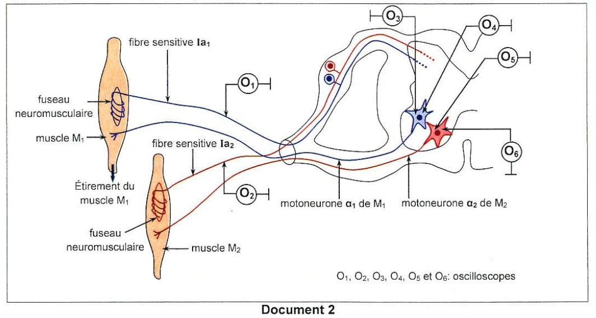
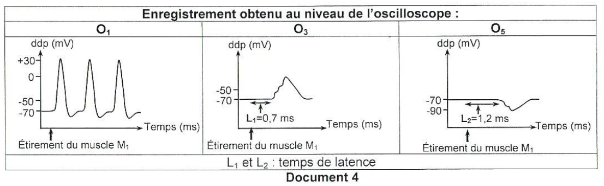
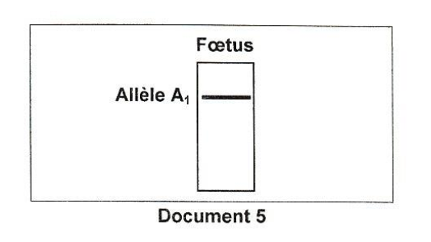
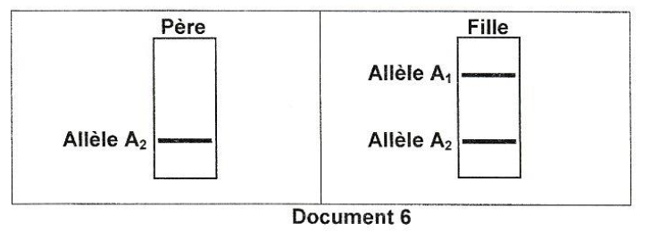

Sciences de la Vie
et de la Terre
Session Principale 2025 — Épreuve officielle simulée
Clique sur chaque verbe pour comprendre ce qu'attend le correcteur.
⚠️ Décrire sans interpréter = 0 pt.
⚠️ Nommer sans expliquer = incomplet.
⚠️ Affirmer sans justifier = non recevable.
⚠️ Rédiger un paragraphe entier = perte de temps.
⚠️ Ignorer les documents = hors sujet.
⚠️ Pas de légende = 0 pt.
Ce que tu dois savoir
Notions ciblées pour cette épreuve uniquement
Fécondation : Rencontre des gamètes mâle et femelle. L'ovocyte II (bloqué en métaphase II) est pénétré par un spermatozoïde. Cette pénétration déclenche l'achèvement de la méiose II et la formation du zygote (cellule-œuf).
Transformations nucléaires : Après la pénétration, l'ovocyte II achève sa méiose II et expulse le 2ème globule polaire. Les pronuclei mâle et femelle se forment, l'ADN se réplique, puis les pronuclei fusionnent (caryogamie) pour rétablir la diploïdie.
FIVETE : Technique de procréation médicalement assistée qui consiste à : stimulation ovarienne → ponction folliculaire → fécondation in vitro → transfert d'embryon.
الإخصاب هو لقاء الأمشاج الذكرية والأنثوية. البويضة II (محتبسة في الطور الاستوائي II) يتم اختراقها بواسطة حيوان منوي، مما يؤدي إلى استكمال الانقسام الاختزالي II وتكوين الزيجوت (البويضة الملقحة).
Réflexe myotatique : Un étirement du muscle M₁ active les fibres sensitives Ia. Ces fibres ont deux voies :
- Voie monosynaptique : La fibre Ia excite directement le motoneurone α₁ → contraction de M₁.
- Voie polysynaptique : La fibre Ia excite un interneurone inhibiteur qui inhibe le motoneurone α₂ → relâchement de M₂.
Cette organisation permet la coordination des muscles antagonistes : quand l'un se contracte, l'autre se relâche.
عند شد العضلة M₁، تنشط الألياف الحسية Ia، والتي لها مساران: مسار أحادي المشبك يحفز العصبون الحركي α₁ (انقباض M₁)، ومسار متعدد المشابك يحفز عصبون جامع مثبط يثبط العصبون الحركي α₂ (ارتخاء M₂).
Hérédité liée à l'X : Le gène est porté par le chromosome X. Un homme n'a qu'un seul X, donc il exprime l'allèle présent. Une femme a deux X, donc elle peut être homozygote ou hétérozygote.
Électrophorèse : Technique qui permet de séparer les molécules d'ADN selon leur taille. La présence d'une bande indique la présence de l'allèle correspondant.
Détermination de la dominance : Si une mère hétérozygote (Xᴬ¹Xᴬ²) est malade, alors l'allèle de la maladie est dominant (A₂ > A₁).
في الوراثة المرتبطة بـ X، يحمل الجين على الكروموسوم X. إذا كانت الأم غير متجانسة (Xᴬ¹Xᴬ²) ومريضة، فإن الأليل الممرض يكون سائداً (A₂ > A₁).
Ministère de l'Éducation
EXAMEN DU BACCALAURÉAT
Pour chacun des items suivants (de 1 à 8), il peut y avoir une (ou deux) réponse(s) correcte(s). Reportez sur votre copie le numéro de chaque item et indiquez dans chaque cas la (ou les deux) lettre(s) correspondant à la (ou aux deux) réponse(s) correcte(s).
NB : toute réponse fausse annule la note attribuée à l'item.

doc1-procreation.png

doc2-dispositif.png

doc3-courbes.png

doc4-enregistrements.png
- le nombre de synapses situées entre le neurone sensitif Ia₁ et chacun des motoneurones α₁ et α₂, sachant que le délai synaptique est de 0,5 ms.
- la nature de chacune de ces synapses.

doc5-foetus.png

doc6-parents.png
- de préciser la localisation du gène responsable de la maladie,
- d'écrire le (ou les) génotype(s) de la mère,
- de déterminer le sexe du fœtus.
Pour chacun des items suivants (de 1 à 8), il peut y avoir une (ou deux) réponse(s) correcte(s). Reportez sur votre copie le numéro de chaque item et indiquez dans chaque cas la (ou les deux) lettre(s) correspondant à la (ou aux deux) réponse(s) correcte(s).
NB : toute réponse fausse annule la note attribuée à l'item.